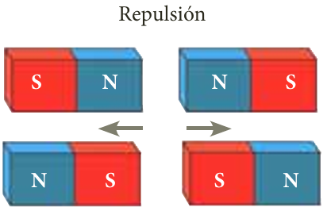
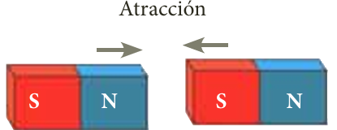

Propósito: Extraer conclusiones basados en los datos obtenidos.
Tiempo estimado: 50 minutos.
Propósito: Extraer conclusiones basados en los datos obtenidos.
Tiempo estimado: 50 minutos.
Todo imán tiene dos polos magnéticos: el polo norte y el polo sur, cuya interacción produce dos tipo de fuerza: fuerzas de atracción y fuerzas de repulsión.


Se denomina campo magnético a la región del espacio en la cual se manifiestan las fuerzas magnéticas producidas por el imán. Faraday estableció que era posible generar corriente eléctrica a través de un alambre con el simple hecho de ingresar y sacar un imán de una bobina. Induciendo voltaje solo con el movimiento relativo entre el alambre y un campo magnético.
Interactuar con el siguiente simulador de la Ley de Faraday para tener presente que características tiene. Una vez terminada la exploración puede pasar a la Actividad sesión 5 para su implementación y así poder realizar la verificación de los aprendizajes.
Obra publicada con Licencia Creative Commons Reconocimiento Compartir igual 4.0